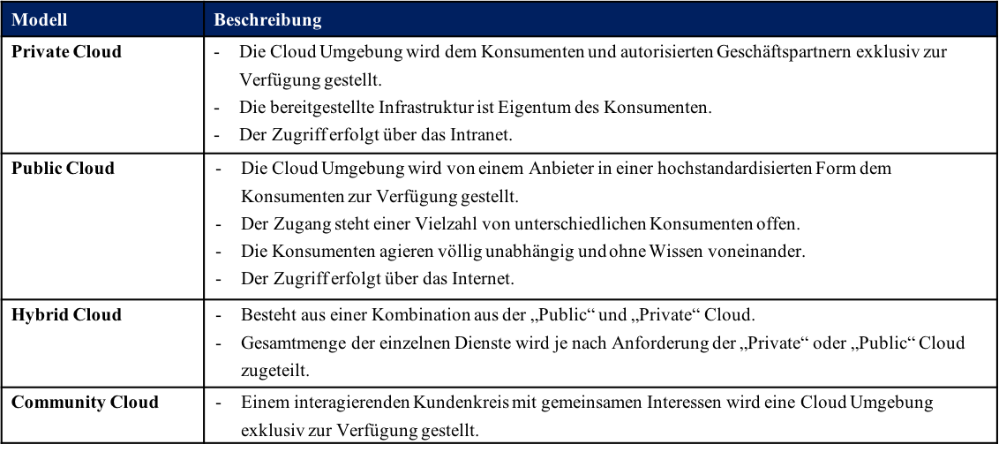
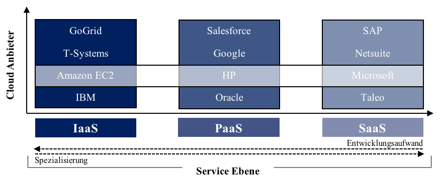
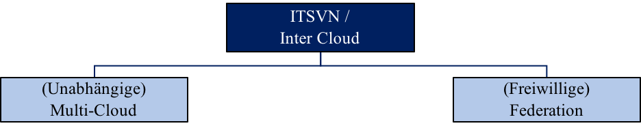
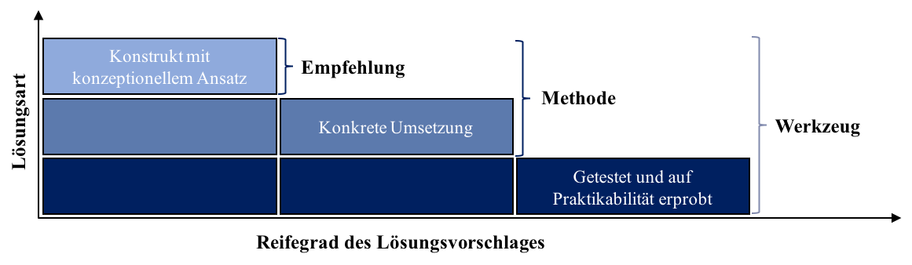
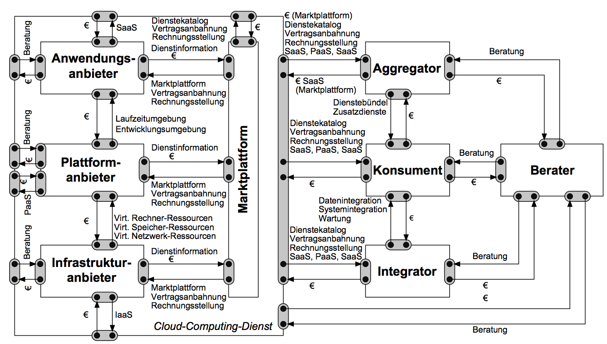

Ungeachtet der zahlreichen Publikationen auf diesem Gebiet existiert keine einheitliche Definition von CC (Madhavaiah & Bashir, 2012, S. 52). Dabei ist das Konzept von CC nicht neu, sondern hat sich ausgehend von anderen Technologien wie Grid- und Cluster-Computing weiterentwickelt (Armbrust et al., 2009, S. 1). Dem Konzept von CC und den anderen Technologien sind gewisse Charakteristika gemeinsam. Ihr Ziel ist ein bedarfsgerechter Einsatz von Computing Ressourcen (Armbrust et al., 2009, S. 2; Buyya, Ranjan & Calheiros, 2010, S. 2; Macedo, Carvalho, Musicante, Pardo & Costa, 2015, S. 1).
NIST hebt fünf Charakteristika hervor, nach denen Dienstleistungen im CC unterschieden werden können (Mell & Grance, 2011, S. 6):
• Der „On-Demand Self-Service“ erlaubt die Freigabe von bedarfsabhängigen Ressourcen an den Konsumenten. Dieser hat also die Möglichkeit, diese herauf bzw. herunter zu skalieren.
• Einer der zentralsten Eigenschaften von CC ist ein „Broad Network Access“. Über ein privates, öffentliches oder geteiltes Netzwerk kann auf Anwendungen zugegriffen werden. Somit wird sichergestellt, dass Ressourcen global zu Verfügung stehen.
• „Resource Pooling“ sind Hardware Ressourcen wie CPU und Speicher, die unterschiedlichen Konsumenten virtuell bereitgestellt werden.
• „Elasticity“ erlaubt eine ständige, an die Bedürfnisse angepasste Skalierung der benötigten Res- sourcen. Eine bedarfsabhängige Erhöhung bzw. Abnahme von Ressourcen kann ohne langwie- rige Planungs- und Organisationsphasen, wie sie in traditionellen Bereitstellungsmethoden der Fall sind, bewirkt werden.
• Der „Measured Service“ ermöglicht dank Reporting Funktionen eine für den Anbieter und Kon- sumenten transparentere Überwachung und Optimierung der verwendeten Ressourcen. Es ist somit möglich, dem Nutzer nur die tatsächlich in Anspruch genommenen Ressourcen bereitzu- stellen und diese dank einer verbesserten Budgetierung in Rechnung zu stellen.
Der Konsument hat die Möglichkeit, flexibel und individuell für seine Zwecke zugeschnittene Lösungen einzusetzen.
Die Breite des Wertezuwachses für den einzelnen Konsumenten ist dabei immer von seinem Bedarf, dem Anbieter und der Lösung abhängig. Eine „one-fits-all“ Lösung existiert nicht.
Zum 3-Ebenen-Modell →
CC Dienste können in drei generalisierte Ebenen unterteilt werden: IaaS, PaaS und SaaS.
Zur Bezeichnung und Kategorisierung dieser verschiedenen Servicetypen hat sich das 3-Ebenen-Modell etabliert. Die verschiedenen Ebenen bauen ihrem Zweck entsprechend aufeinander auf.
Grundsätzlich existieren weitere Dienstleistungsbezeichnungen wie Desktop-as-a-Service (DaaS) oder Monitoring-as-a-Service (MaaS).
Unter dem Begriff Everything-as-a-Service (XaaS) können diese aggregiert werden (Krcmar, 2015, S. 692-703).
IaaS sind der untersten der drei Ebenen zuzuordnen.
Sie stellen IT Experten die Computer Infrastruktur in Form von Hardware- und der Betriebssystemkomponente bereit und sorgen daher für hohe Flexibilität.
Im Vergleich zu den anderen Ebenen jedoch erfordern sie einen größeren Aufwand, da Plattformen und Anwendungen vom Nutzer selbst verwaltet werden müssen.
Auf der zweiten Ebene, der PaaS, können eigene, cloudbasierte Anwendungen entwickelt und an die unternehmenseigenen Anwendungen integriert werden.
Auf der obersten Ebene befinden sich SaaS. Diese richten sich direkt an Konsumenten, weniger an Entwickler. Auf dieser Ebene werden standardisierte Anwendungen wie Desktop-, Kommunikations- oder Kollaborationsanwendungen bereitgestellt. Diese können zwar begrenzt konfiguriert werden, der Entwicklungsaufwand hält sich dafür aber gering (Liu et al., 2011, S. 6).
Zum Nutzungsmodell →
Es existieren überwiegend 4 verschiedene Nutzungsmodelle, in denen IaaS, PaaS und SaaS zum Einsatz kommen. Diese können je nach Netzwerkinfrastruktur öffentlich (via Internet), nicht öffentlich oder privat (via Intranet) vorliegen (Mell & Grance, 2011; Münzl et al., 2009).
Die folgenden Bezeichnungen haben sich etabliert:

Zum Wertschöpfungsnetzwerk →
Eine Wertschöpfungskette beschreibt eine Reihe wertschöpfungssteigernder Maßnahmen bei vertikaler Produktentwicklung. Der Begriff Wertschöpfungskette wurde vom US-amerikanischen Ökonomen Michael Porter geprägt, dessen Modell zur betriebswirtschaftlichen Analyse unter dem Begriff der „Value Chain“ oder „Supply Chain“ bekannt wurde (Porter, 1986, S. 61 ff). Porter listet hierin alle Prozesse, Akteure und Funktionen auf, die unmittelbar am Mehrwert des Produkts beteiligt sind. Sein Modell fokussiert nicht - wie damals üblich - die Auswertung von Produktionsdaten, sondern die Analyse der einzelnen Produktionsstufen. Effizienzsteigernde Maßnahmen können so zur Stärkung der Kernkompetenzen eingeleitet wer- den (Porter, 1985, S. 63) und zum Wettbewerbsvorteil beitragen.
Im Unterschied zu diesem Modell nehmen Böhm, Koleva, et al. (2010, S. 4) in ihrem ITSVN Modell die horizontale Produktentwicklung mit auf (Böhm, Koleva, et al., 2010, S. 4), da sie der Ansicht sind, dass Aktivitäten und Funktionen nicht nur rein sequentiell, sondern simultan ausgeführt werden. Nach Meinung der Autoren können auch Allianzen und Kooperationen in einem Netzwerk so besser zum Ausdruck gebracht werden. IT Dienste werden also aus einer Kombination verschiedener Serviceebenen vieler verschiedener Anbieter gebildet.

Beispielhaft stellt die Abbildung ein vertikales und horizontales Liefernetzwerk dar: Vertikal agierende Anbieter (hier: GoGrid, T-Systeme, Amazon EC2 und IBM) können ebenso gemeinsam eine Dienstleistung zur Verfügung stellen, wie horizontal agierende Anbieter (hier: Amazon EC2, HP und Microsoft), deren Dienste auf anderen Ebenen aufbauen können.
Zu Heterogenität in Wertschöpfungsnetzwerken →
Heterogenität drückt sich in einer gehemmten Kommunikation verschiedener Komponenten aus (Widjaja, Kaiser, Tepel & Buxmann, 2012, S. 4).
Die Autoren Heininger et al. (2016) erweitern in ihrer Definition diesen Aspekt mit folgendem Zusatz (Heininger et al., 2016, S. 3):
„Heterogeneity in an ITSVN can be defined as the diversity and alterity of the attributes of the summed applications, platforms, infrastructures, actors, technologies, interfaces, and tools of the ITSVN. “
Die Autoren definieren Heterogenität als Vielfalt und Andersartigkeit von Attributen bezogen auf die innerhalb eines ITSVN existierenden Anwendungen, Plattformen, Infrastrukturen, Akteuren, Technologien, Schnittstellen und Werkzeugen.
Vielfalt beschreibt die Menge an unterschiedlichen Ausprägungen der Elemente.
Andersartigkeit meint den Grad der Unterscheidung dieser unterschiedlichen Ausprägungen (Heininger et al., 2016, S. 166).
Am Beispiel Sprachen illustrieren die Autoren die Bedeutungsunterschiede dieser beiden Begriffe. Vielfalt meint die Anzahl an Sprachen, Andersartigkeit den Grad der Unterschiedlichkeit dieser Sprachen.
So ist der Grad der Unterschiedlichkeit im Vergleich zwischen Deutsch und Chinesisch höher anzusehen, als im Vergleich zwischen Deutsch und Englisch.
Heterogenität steht also in Abhängigkeit mit der Anzahl an Komponenten, dem Grad an Unterscheidungen und dem Beziehungsgeflecht der Komponenten.
Bezogen auf die Abbildung im Reiter ITSVN drückt sich Heterogenität hierdurch aus, dass ein Wechsel der Anbieter auf der vertikalen sowie horizontalen Ebene mit hohem Anpassungsbedarf und beträchtlichen Investitionskosten verbunden ist.
Zu Inter Cloud →
Im englischsprachigen Raum ist der Begriff Inter Cloud verbreitet. Dieser meint ähnlich wie ITSVN die „Kooperation von Clouds verschiedener Anbieter mit heterogenen Funktionalitä- ten“ (Jardim-Goncalves, Popplewell & Grilo, 2012, S. 3). Für ein besseres Verständnis und
Einordnung dieser Begrifflichkeiten eignet sich die von Buyya et al. (2010) entwickelte, wissenschaftliche Klassifizierungsmethode zu Inter Cloud und ITSVN.

Inter Cloud wie auch ITSVN lassen sich in zwei weitere Subkategorien Multi-Cloud und Cloud Federation untergliedern (Allison, Turner & Allen, 2015; Andronico, Fargetta, Monforte, Paone & Villari, 2014; Demchenko et al., 2013; Haji, Letaifa & Tabbane, 2014; Pellegrini, Sanzo & Avresky, 2016; Zangara, Terrana, Corso, Ughetti & Montalbano, 2015).
Eine Cloud Federation meint in diesem Zusammenhang eine Anzahl gemeinsam agierender Cloud Anbie- ter, die Ressourcen und Dienste miteinander teilen und kombinieren (Buyya et al., 2010, S. 2).
Eine Multi-Cloud hingegen unterscheidet sich von der Cloud Federation dahingehend, dass die Anbieter unabhängig voneinander agieren. Der Konsument muss die Ressourcen und Dienste der Anbieter selbst zusammenstellen, in seine Infrastruktur integrieren und überwachen. Die Prüfung auf kompatible Komponenten erfolgt nicht im Vorhinein, sondern muss vom Aggregator und vom Integrator vorgenommen werden.
Im weiteren Verlauf dieser Analyse soll versucht werden, dieser Differenzierung auch in den Lösungsvorschlägen gerecht zu werden, indem die Granularität der Begriffe Multi Cloud und Cloud Federation erhalten bleibt.
Zu den Bedeutungen der Elemente →
Die Literaturanalyse wird auf Grundlage der von Heininger et al. (2016) gesammelten Attribute für die Elemente `Akteur´ und `Schnittstelle´ durchgeführt.
Das Element `Akteur´ besteht aus den Attributen Preisgestaltungsrichtlinien, Standardisierung, Regelung in Service Level Ver- trägen (SLA), Einschränkungen, Benutzerschnittstelle, Terminologie, Ökosystem, Anforde- rung, Rolle, Beschaffungsprozess, rechtliche Rahmenbedingungen, Fähigkeitsniveau, kultureller Hintergrund und Support Prozess.
Das Element `Schnittstelle´ umfasst die Attribute `Standardisierung´, `Kommunikation´, `Mechaniken´, `Datenintegrität´, `Serviceschnittstellen´ und `Versionsstand´. Die Literaturrecherche wird mit den ursprünglich englischen Begriffen durchgeführt.
Die beiden Abbildungen listen diese Elemente und Attribute in deutscher Übersetzung samt ihrer Bedeutung auf.
Zu den Begriffen bitte klicken!
Zum Reifegrad →
Die herausgearbeiteten Lösungsvorschläge werden nach Art der Lösung einer Empfehlung, einer Methode oder eines Werkzeuges zugeordnet. Empfehlung, Methode und Werkzeug spie- geln den Reifegrad einer Lösung wieder, da sie ihrer Bedeutung nach aufeinander aufbauen: Eine Empfehlung wird in Form eines Vorschlages, Rates oder Hinweises gegeben. Eine konkrete Ausführungsmethode ist nicht Bestandteil.
Eine Methode hingegen umfasst die Art und Weise der Umsetzung. Der Vorschlag wird somit konkretisiert.
Ein Werkzeug meint einen für „bestimmte Zwecke geformten Gegenstand, mit dessen Hilfe etwas bearbeitet oder hergestellt wird.“
Was die einzuordnenden Lösungstexte dieser Analyse betrifft, so empfiehlt es sich, folgenden Beurteilungsleitfaden heranziehen:
Ein Text, dessen Lösung auf einem Konstrukt mit einem konzeptionellen Ansatz ohne auszuführende Umsetzung basiert, wird als Empfehlung eingestuft.
Ist eine konkrete Umsetzung in Form von Code oder ähnlichem mit aufgeführt, wird dieser Vorschlag als Methode eingestuft.
Wird der Vorschlag in einem echten Szenario getestet und auf Praktikabilität erprobt, erfüllt sie die Begriffsbestimmung eines Werkzeuges.
Anhand dieses Reifegradmodells werden die Lösungsvorschläge der Texte zugeordnet.

Zum einen sind viele verschiedene Akteure unterschiedlicher Ebenen an einer Lieferbeziehung zum Konsumenten beteiligt, zum anderen existiert ein großes Serviceangebot.
IT Services werden „durch eine Kombination von Informationstechnologie, Menschen und Pro- zessen gebildet“ und [...] unterstützen [...] die Business-Prozesse eines oder mehrerer“ Konsu- menten (IitSMF, 2016, S. 66). Böhm, Koleva, et al. (2010, S. 8) führen in ihrem Modell alle wesentlichen Akteure auf, die für die Bereitstellung von CC Dienstleistungen in einem ITSVN beteiligt sind.

Die Autoren dieses Modells identifizieren auf der generischen Ebene innerhalb dieses ITSVN insgesamt acht voneinander unabhängige Akteure, die sich - ausgenommen vom Konsumenten - allesamt zur Erbringung von Dienstleitungen beteiligen. Infrastruktur-, Anwendungs- und Plattformanbieter bilden die drei Ebenen IaaS, PaaS und SaaS, die ihre Dienste über Markt- plattformen und über den Aggregator, den Integrator oder Berater dem Konsumenten anbieten.
Dieses Schaubild verdeutlicht, dass von den Akteuren innerhalb dieses ITSVN eine gestiegene Koordination verlangt wird: Neue Zuständigkeiten und Verantwortlichkeiten entstehen. Diese Veränderungen dürfen aber nicht dazu führen, dass Dienstleistungen unvollständig oder min- derwertig erbracht werden. Bezogen auf das dargestellte Model nehmen hierbei der Aggregator und der Integrator als Bindeglied zwischen Anbieter und Konsument eine essentielle Rolle ein.
Sie tragen durch ihre Funktion für eine zuverlässige Durchführung der Dienstleistung beim Konsumenten große Verantwortung und sind gleichzeitig der größten Komplexitätsstufe ausgesetzt.
Zu Cloud Computing →